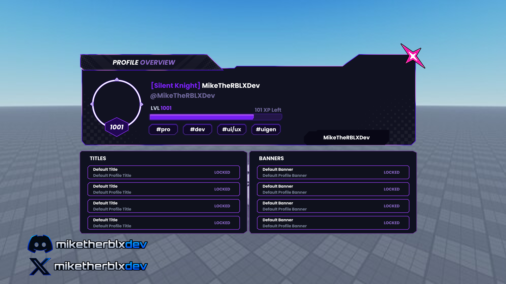

UI & UX design
HUDs · Menus · Shops · Inventories · Profiles
Give your game a consistent visual identity and a clear interface. I design layouts that put the right information and actions where players expect them.
↗Independent design · Roblox
Available for projectsI’m Mike. I design Roblox UI that feels right for your game—clear, distinctive, and brought to life with smooth animations.
UI design first. Scripting knowledge behind every interaction.

01 / Selected work
From bold simulator HUDs to detailed player profiles. Here’s a closer look at my interface work.
Loading selected work…
02 / How I can help
A new UI, a focused redesign, or the animations that make it feel alive. Choose the support your project needs.
HUDs · Menus · Shops · Inventories · Profiles
Give your game a consistent visual identity and a clear interface. I design layouts that put the right information and actions where players expect them.
↗Transitions · Button feedback · Interactive menus
Bring the design to life with animated transitions and responsive interactions. My Roblox scripting background helps connect how your UI looks with how it works.
↗Existing interfaces · Visual consistency · Usability
Already have a UI? We can improve its hierarchy, styling, or motion without starting the whole project over. Share the screens you want to refine.
↗Small scripting tasks and targeted system work, depending on scope. Explore my scripting background ↗
03 / Working together
You’ll know what we’re making, what it costs, and what you’re receiving before work begins.
Send your game idea, the screens you need, and any references. We’ll agree on the scope, quote, and timing together.
Once the 30% upfront payment is made, I begin the agreed work. We’ll discuss the visual direction and review the finished result.
After approval and the remaining 70% payment, I deliver the agreed files. UI scripting and animation can be included in your scope.
Every project is scoped individually. Read the terms before commissioning ↗
Your designer. Your direct point of contact.
04 / The person behind the pixels
I’m Mike, an independent Roblox UI designer with over four years of experience on the platform. My focus is creating interfaces that give your game a clear identity and feel natural to use.
I also know how to script. That means I can think beyond a static screen and help with the animations and interactions behind it. You work directly with me, from the brief to delivery.
Tell me about your game05 / A few useful answers
Yes. I offer UI design alongside UI scripting and animations. Tell me whether you need the design, implementation, or both so I can quote the right scope.
Yes. Send screenshots or a demo and explain what you want to change. We can discuss a refresh, a few specific screens, or animated polish.
It depends on the number of screens, visual detail, and whether you need scripting or animation. Share your brief and budget; I’ll provide a quote before work begins.
Message me with your deadline. I’ll confirm availability and a realistic timeline for your scope. You can expect a reply within 24 hours.
I can consider small scripting tasks and targeted system work. UI is my main focus, so availability will depend on the task and current projects.
Tell me what you’re building. We’ll work out the right UI for it.